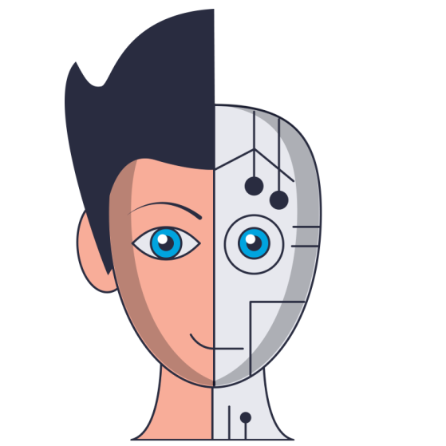

EMOTION CLASSIFICATION
INFANT CRY CLASSIFICATION


VOICE LIVELINESS DETECTION
AUDIO DEEPFAKE DETECTION

Speech technologies can be effectively used in Assistive Technologies in a large variety of ways,
such as improving the intelligibility of unintelligible speech of disabled and providing
communicative assistance (devices) for frail people or individuals with severe motor or language
impairments, such as dysarthria, cerebral palsy, Parkinson’s disease, Autism Spectrum Disorder.
In addition, the design of personalized Text-To-Speech for disabled persons is a socially
relevant research problem. However, there has been very less interaction in the intersection between
researchers of Assistive Technologies and speech technology.
Assistive Technologies allows individuals with disabilities to do things that would
otherwise be difficult for them. Assistive technologies provide universal access to televisions or
telephones to make them accessible to those who are visually challenged or have hearing impairments.
Prof. Patil and his team of DA-IICT use their experience to develop assistive speech
technologies for the disabled.